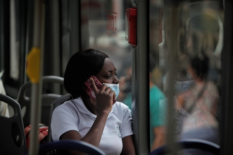
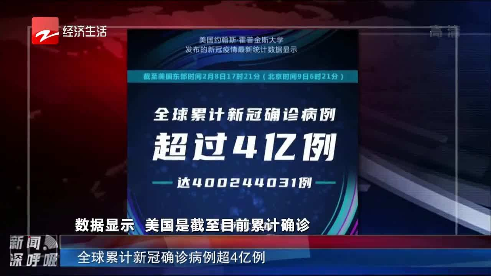

美国前总统克林顿新冠病毒检测结果呈阳性
当地时间11月30日，美国前总统比尔·克林顿通过社交媒体表示，他的新冠病毒检测结果呈阳性。克林顿表示，他接种了新冠疫苗和加强针，目前症状轻微。

新冠感染超6.33亿 累计接种新冠疫苗超129.93亿剂次
11月30日，中国之外221个国家和地区有感染病例，累计感染者过千例的已达到181个；美国累计感染约9875万例全球居首；非洲确诊超千例国家已55个，亚洲45个，欧洲44个，美洲33个，大洋洲4个

全球累计新冠确诊病例达639572819例
世卫组织网站最新数据显示，截至欧洲中部时间1日17时34分（北京时间2日零时34分），全球确诊病例较前一日增加271702例，达到639572819例；死亡病例增加562例，达到6615258例。